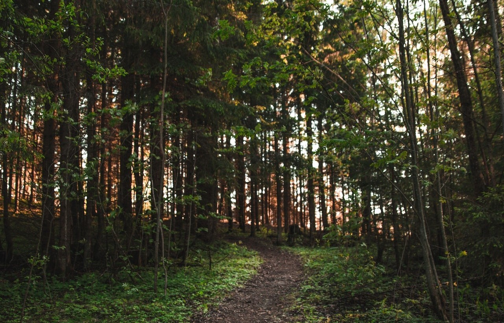

In mijn vrije tijd hou ik me graag bezig met het spelen en schrijven van muziek. Hierbij speel ik voornamelijk basgitaar. Het schrijven van een nummer lijkt voor mij erg op het schrijven van een programma. Verschillende onderdelen moeten op de juiste plaats en op de juiste manier uitgewerkt worden zodat het een mooi werkend geheel kan worden. Het zijn beide zeer creatieve processen maar tegelijk wiskundig en logisch opgebouwd.
Ik ben iemand die graag de bossen intrekt voor een lange wandeling. Zeker na een hele dag programmeren merk ik dat dit heel verhelderend kan zijn en dat het mijn werk vaak ten goede komt. Zelfs vlakbij huis vind ik het iedere keer weer verbazend wat voor mooie stukken natuur we hier hebben.

Naast wandelen in de natuur hou ik ook van lopen in de natuur. Het doet me goed om na een hele dag achter een bureau te zitten ook eens wat intensiever te bewegen. Het liefst loop ik lange afstanden en ga ik opzoek naar nieuwe en mooie plaatsen om te ontdekken. Door regelmatig te sporten merk ik dat ik alerter ben een veel meer energie heb.

Behalve de intense sporten hou ik ook zeer van de denksporten. Op mijn 11 jaar ben ik schaakles beginnen volgen en heb ik meegedaan aan enkele toernooien. Schaken is een strategisch bordspel met 2 spelers. De bedoeling is om de koning van de andere speler schaakmat te zetten. Een koning staat schaakmat als deze aangevallen staat en er geen mogelijkheid meer is om deze in veiligheid te brengen.
Schaken wordt gespeeld met de volgende stukken:
Hoewel ik hier nooit echt grote prijzen mee heb gewonnen, ben ik het altijd zeer graag blijven doen. Ook nu spreek ik nog regelmatig af met vrienden om een schaakspel te spelen. Ik wist dus al op jonge leeftijd dat logisch redeneren en strategisch denken in mijn bloed zat. Dit heb ik later ook gemerkt als ik begon met programmeren.